Học kỳ 1 · Năm học 2026–2027
Từ dữ liệu chưa gán nhãn đến một mã có ích cho tác vụ đích.
Trình bày được kiến trúc của một mạng tự mã hóa cơ bản, bao gồm bộ mã hóa, không gian ẩn và bộ giải mã.
Chọn cách tái sử dụng biểu diễn bằng đóng băng hoặc tinh chỉnh cho tác vụ đích.
Sản phẩm luyện tập: tính kích thước tensor, số tham số và MSE tái tạo trên ví dụ nhỏ.
Tiên quyết: MLP, lan truyền ngược, phép nhân ma trận, chia dữ liệu huấn luyện–kiểm định–kiểm tra, NCHW và chế độ huấn luyện–suy luận của mô-đun.
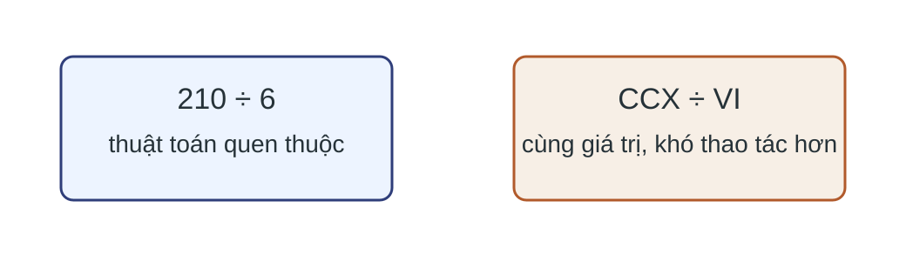
Cùng một đối tượng, cách mã hóa khác nhau có thể làm quy tắc dự đoán đơn giản hoặc phức tạp.
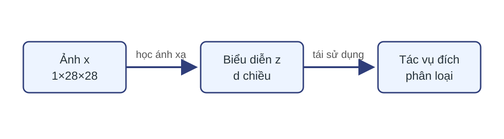
$X_{\mathrm{img}}$ chưa có nhãn lớp.
Tái tạo $X$ hoặc bản sạch của $X$.
Tham số của bộ mã hóa.
Học tự giám sát (self-supervised learning) tạo mục tiêu huấn luyện từ cấu trúc của dữ liệu.
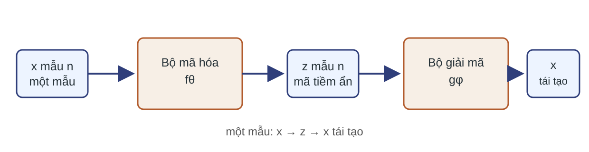
$$z^{(n)}=f_\theta(x^{(n)}),\qquad \hat{x}^{(n)}=g_\phi(z^{(n)}).$$
Mỗi mã $z^{(n)}\in\mathbb R^d$; một lô gồm $N$ mã tạo ma trận $Z\in\mathbb R^{N\times d}$.
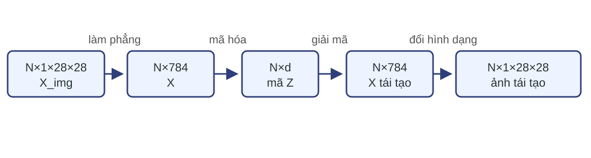
$X_{\mathrm{img}}\in[0,1]^{N\times1\times28\times28}\rightarrow X\in[0,1]^{N\times784}$; làm phẳng riêng từng mẫu.
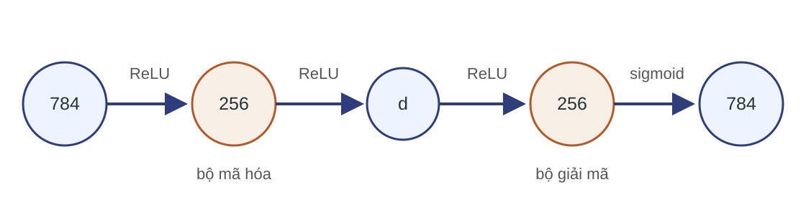
Ví dụ: $784\rightarrow256\rightarrow d\rightarrow256\rightarrow784$, với $d\lt784$.
$H_e=\rho(XW_{e1}+b_{e1})$
$Z=\rho(H_eW_{e2}+b_{e2})$
$H_d=\rho(ZW_{d1}+b_{d1})$
$\hat X=\sigma(H_dW_{d2}+b_{d2})$
$H_e,H_d\in\mathbb R^{N\times256}$, $Z\in\mathbb R^{N\times d}$, $\hat X\in(0,1)^{N\times784}$; độ lệch phát theo trục lô.
Bình phương sai số ở từng tọa độ rồi cộng.
Tổng hoặc trung bình cho giá trị và thang gradient khác nhau.
Tên “lỗi bình phương” chưa đủ; phải nêu trục và số phần tử được lấy trung bình.
Với một mẫu thu nhỏ có $D=4$ phần tử, cho $x^{(1)}=(0{,}2,0{,}4,0{,}8,0{,}3)$ và $\hat{x}^{(1)}=(0{,}1,0{,}6,0{,}5,0{,}5)$.
$X\in[0,1]^{N\times D}$; đầu ra sigmoid cho $\hat X\in(0,1)^{N\times D}$; $D=784$.
Nếu thư viện chỉ lấy trung bình theo lô hoặc chỉ lấy tổng, thang gradient sẽ khác.
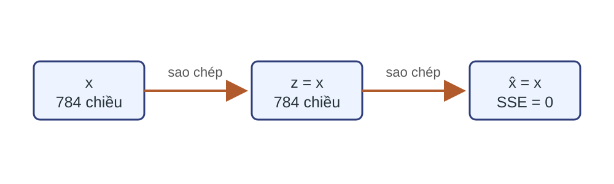
Nếu mô hình có thể học $g_\phi(f_\theta(x))=x$, lỗi bằng 0 nhưng mã chưa chắc bộc lộ cấu trúc có ích.
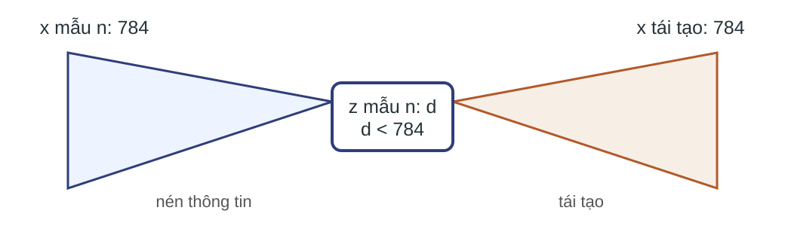
$d\lt784$ tạo autoencoder có mã thấp chiều (undercomplete): mã không thể giữ từng tọa độ bằng một phép chép trực tiếp.
Giữ các biến thiên giúp tái tạo dữ liệu.
Mạng phi tuyến đủ mạnh vẫn có thể ghi nhớ một tập huấn luyện hữu hạn.
Phải đo cả lỗi kiểm định và chất lượng trên tác vụ đích.
| $d$ | Tái tạo | Nguy cơ |
|---|---|---|
| Quá nhỏ | Mất chi tiết | Thiếu năng lực |
| Vừa đủ | Giữ cấu trúc chính | Cần kiểm định |
| Quá lớn | Dễ giảm lỗi | Sao chép hoặc ghi nhớ |
Chọn $d$ trên tập kiểm định; chỉ báo cáo cuối trên tập kiểm tra.
$d\lt D$
Hạn chế số chiều.
Phạt mềm hoặc chọn cứng.
Có thể $d\ge D$.
Đầu vào bị nhiễu, mục tiêu sạch.
Thêm hạng phạt vào mất mát, tạo áp lực đưa hoạt hóa về 0.
$\lambda$ điều khiển mức phạt.
Giữ tối đa $k$ hoạt hóa khác 0 lớn nhất của từng mẫu.
Không thêm hình phạt.
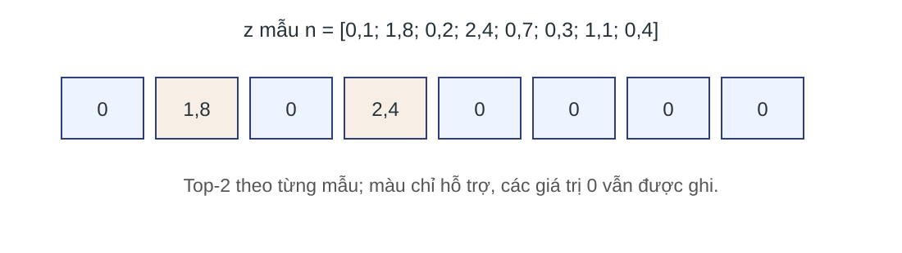
Ví dụ $d=8$, $k=2$: hai giá trị lớn nhất là $1{,}8$ và $2{,}4$, ở vị trí 2 và 4; các vị trí khác bằng 0.
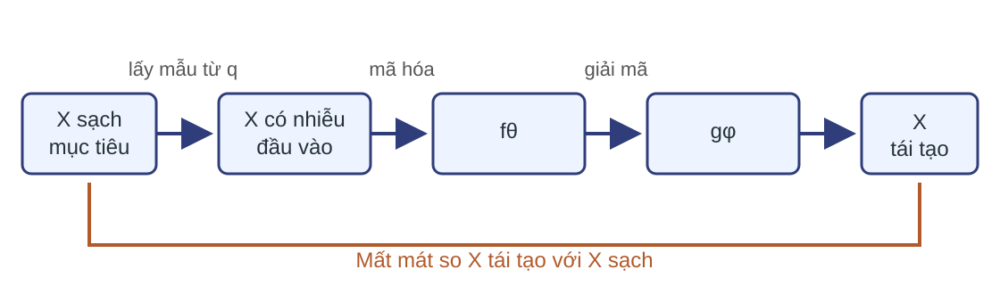
$p_{\mathrm{train}}$ là phân phối dữ liệu huấn luyện; $q$ là cơ chế nhiễu. $X\in[0,1]^{N\times784}$, $\widetilde X\in\mathbb R^{N\times784}$.
| Biến thể | Thay đổi | Kiểm tra chính |
|---|---|---|
| Mã thấp chiều | Kích thước $d$ | Đủ thông tin chưa? |
| Thưa | $\Omega$ (hàm phạt thưa) hoặc top-$k$ | Bao nhiêu phần tử khác 0? |
| Khử nhiễu | Đầu vào $\widetilde X$ | Đích có còn là $X$ sạch? |
Phạt mềm: $\mathcal L=\mathcal L_{\mathrm{rec}}+\lambda\lVert Z\rVert_1/(N\!\cdot\!d)$; top-$k$ là phép chọn cứng riêng từng mẫu.
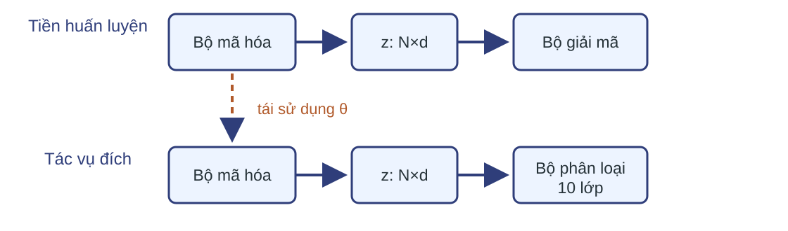
Sau khi kiểm định mã, học chuyển giao tái sử dụng bộ mã hóa cho tác vụ có nhãn.
$\theta^\star$ là tham số bộ mã hóa sau tiền huấn luyện. Với MNIST, $N=32$: $Z\in\mathbb R^{32\times d}$, $S\in\mathbb R^{32\times10}$; chỉ $\psi$ thuộc bộ tối ưu.
Dùng entropy chéo hợp nhất trực tiếp từ logit $S$ theo trục lớp và lấy trung bình theo $N$.
Khởi tạo từ $\theta^\star$, rồi cập nhật một phần hoặc toàn bộ $\theta$ cùng $\psi$ bằng dữ liệu có nhãn.
| Giai đoạn | Tham số được cập nhật | Chế độ mô-đun |
|---|---|---|
| Tiền huấn luyện | Mã hóa + giải mã | Cả hai: huấn luyện |
| Trích đặc trưng đóng băng mã hóa | Chỉ bộ phân loại | Mã hóa: đánh giá; phân loại: huấn luyện |
| Tinh chỉnh một phần | Khối được chọn + phân loại | Chọn riêng cho từng mô-đun |
| Suy luận | Không | Tất cả: đánh giá |
So sánh đóng băng và tinh chỉnh dưới cùng phép chia dữ liệu và cùng ngân sách.
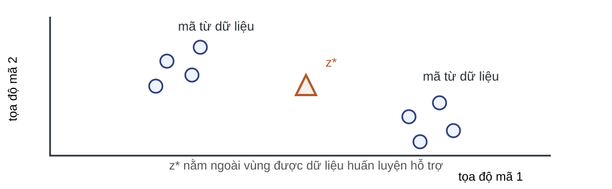
Mã hữu ích cho tác vụ đích vẫn không bảo đảm bộ giải mã xử lý được mã tùy ý.
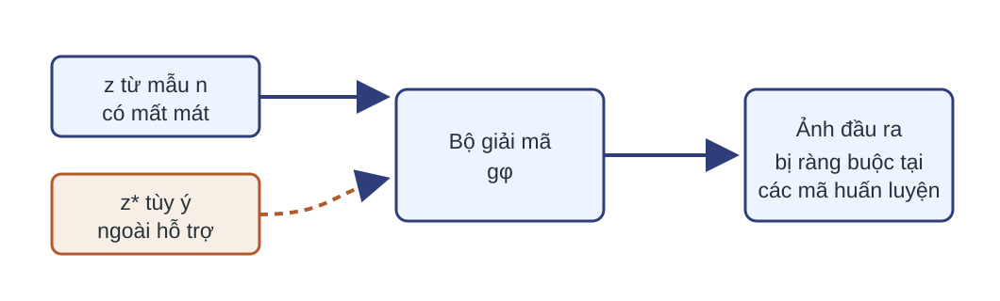
Ngoài vùng được dữ liệu hỗ trợ là ngoại suy. Đường nối giữa hai mã quan sát vẫn có thể đi qua vùng mật độ thấp.
Ánh xạ xác định $x\mapsto z\mapsto\hat x$ và mất mát tái tạo.
Một quy tắc lấy mẫu $z$ đã được huấn luyện để tạo dữ liệu mới hợp lệ.
Không được tự giả sử $z\sim\mathcal N(0,I)$.
Tiền huấn luyện rồi tái sử dụng biểu diễn cũng là cơ chế nền tảng trong các mô hình lớn.
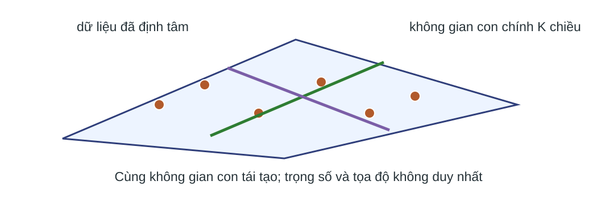
Với dữ liệu đã định tâm, bộ mã hóa–giải mã tuyến tính có véc-tơ độ lệch (bias) phù hợp, nút thắt $K$ và mất mát bình phương, tại nghiệm tối ưu, phép tái tạo khôi phục không gian con chính $K$ chiều.
$d=8,\ k=2$
vị trí 2 và 4 hoạt động
$d=8,\ k=2$
vị trí 1 và 7 hoạt động
$d$ đo số tọa độ có thể dùng; $k$ đo số tọa độ dùng cho từng mẫu. $\Omega$ điều khiển mức thưa mềm, còn top-$k$ khóa cứng $k$.
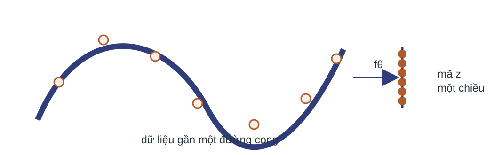
Lớp phi tuyến cho phép mô tả cấu trúc cong mà một không gian con tuyến tính không biểu diễn tốt.
Chỉ số tác vụ đích.
Ba phần dữ liệu tách biệt.
Chỉ số gắn với câu hỏi.
Khả năng diễn giải là mong muốn, không phải hệ quả tự động của mã tiềm ẩn.